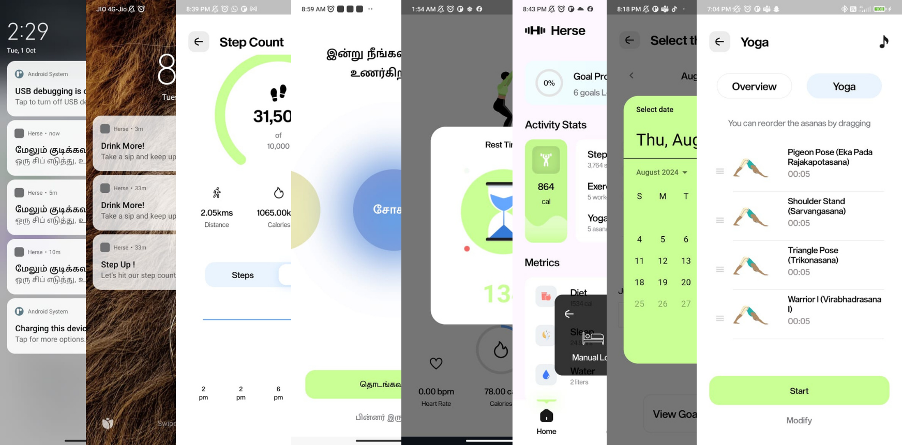
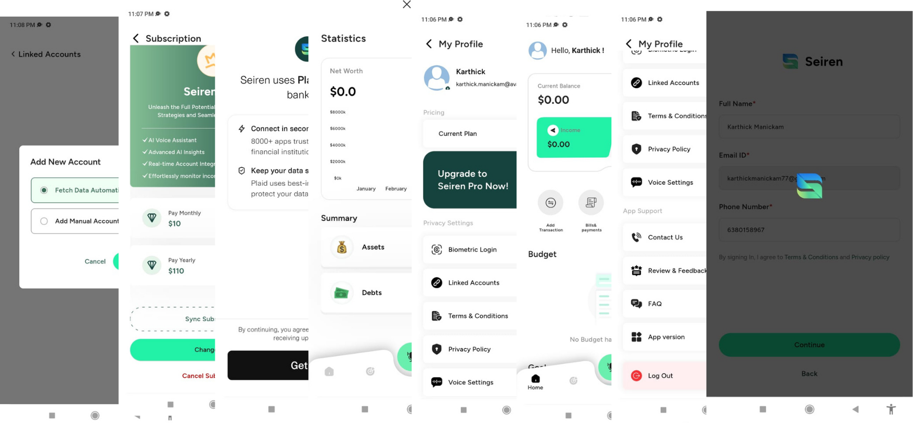
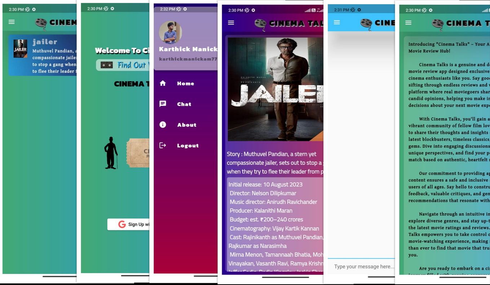
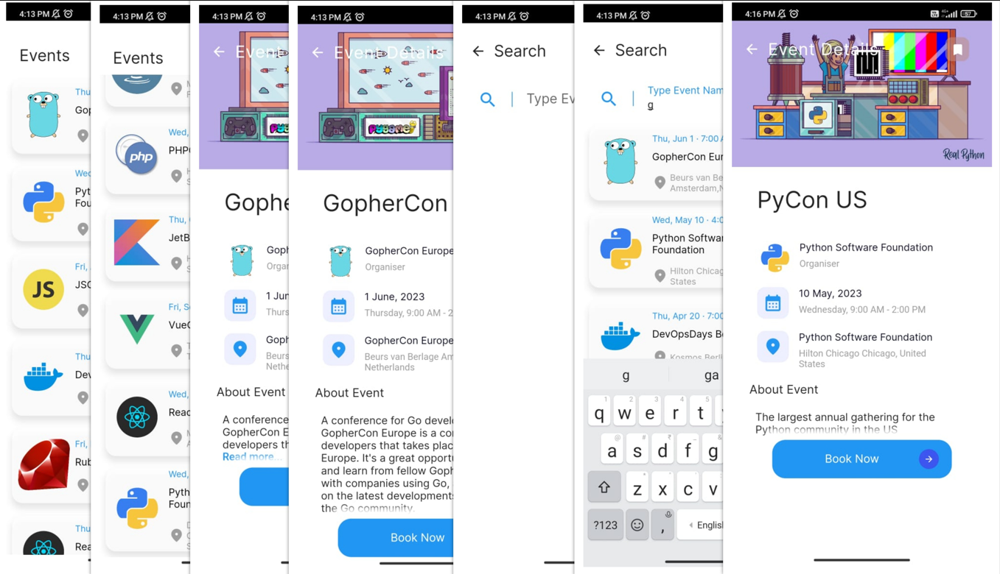
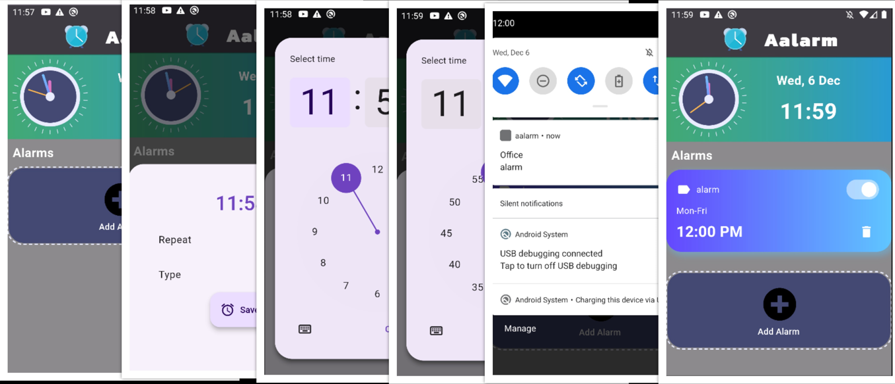
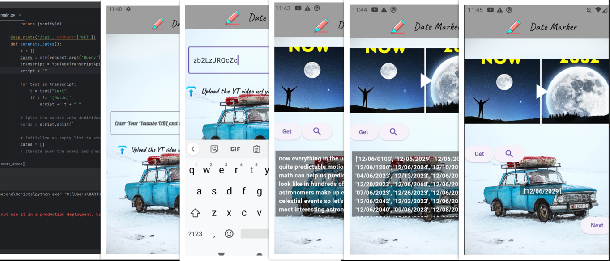
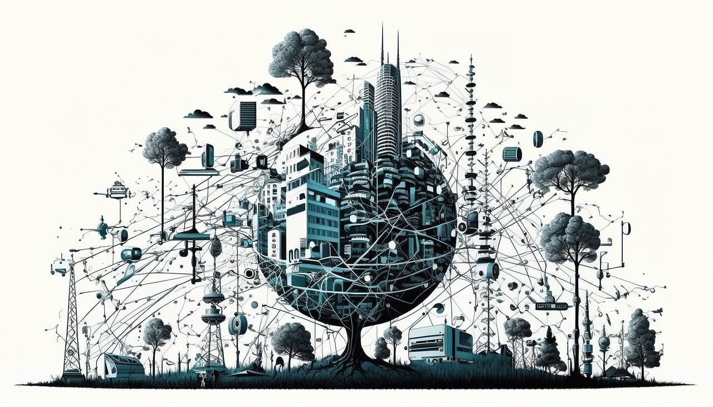

Projects 🛠️ Here you will find some of the projects that I created with the project details
Featured Projects
1

Herse
Herse is an innovative bilingual fitness app designed to elevate your wellness journey through intelligent, personalized support. Powered by AI, the app tailors daily fitness goals and workout plans based on each user's unique data, fitness level, energy, and mood — ensuring that every session aligns with how you feel each day. Herse offers an extensive library of live and on-demand workouts, including strength training, cardio, yoga, and stretching routines, all led by expert trainers. The app's comprehensive health tracking features allow users to monitor key metrics such as heart rate, sleep quality, calorie intake, and daily activity. Real-time voice feedback and reminders during workouts provide encouragement and form guidance. With full bilingual support, Herse ensures accessibility for a wider audience.
2

Appify (UI Component System)
Appify is a developer-focused template library app designed to accelerate mobile app development by offering pre-designed, customizable screens and UI components. In Phase 1, we built a collection of high-utility templates including complete screens, navigation bars, and essential reusable elements. In Phase 2, the app evolved into a more dynamic platform, introducing advanced, visually engaging components such as adjustable carousels, interactive filters, and menu-style UI elements. These ready-to-integrate features provide developers with a seamless plug-and-play design experience, significantly reducing UI development time while ensuring flexibility, consistency, and a polished user experience across projects.
3

Siren
Siren is an advanced AI powered expense tracker that leverages AI to deliver an intuitive and expressive user experience for managing personal and group finances. Users can effortlessly create budgets and savings goals, monitor recent and upcoming transactions, and access a comprehensive transaction history. The application provides in-depth spending reports and insightful data analytics to help users make informed financial decisions. Key features include seamless group expense management with smart splitting, secure bank card linking, and automatic data fetching from supported transaction apps. Plaid integration ensures reliable and secure connectivity with multiple financial institutions. To enhance user convenience, the tracker offers customizable notifications, biometric security options, and voice assistant support.
App Development Projects
1

Cinema Talks - Movie Review App
The Cinema Talks project is driven by the central goal of establishing a dynamic and interactive platform tailored for movie enthusiasts. Through the recent update now available on the Play Store, users can experience heightened security and convenience with email sign-in, engage in real-time discussions via the chat feature, and seamlessly recover passwords. The innovative "Likes" feature adds a new layer to user interaction, allowing them to express appreciation for favorite movies and contributing to a more vibrant community engagement. This initiative is rooted in the vision of cultivating a thriving online space where individuals can share their passion for movies, fostering a sense of community and enriching the overall cinematic journey for users.
2

TIF API Task
I successfully developed a Flutter app for The InterFolk Organization, connecting to an API and presenting data based on provided UI/UX designs. The app features three pages, including a user-friendly search bar, and incorporates data conversions like translating random numbers into dates and weeks. This project, completed within a day, demonstrates my rapid problem-solving skills and proficiency in delivering functional apps aligned with organizational requirements. It underscores my ability to efficiently translate conceptual requirements into polished, user-centric applications.
3

A Alarm
I designed and developed an intuitive alarm application with an enhanced user interface, delivering an optimal user experience. The app seamlessly integrates user-friendly controls and a visually appealing layout, ensuring efficient navigation. With a focus on creating a sleek and polished design, the alarm app not only provides essential functionality but also prioritizes aesthetic appeal. This project exemplifies my commitment to combining functionality with a visually pleasing user interface, demonstrating my ability to deliver well-crafted and user-centric applications efficiently.
Data & Utility Projects
1

Date Extractor
Crafted with precision using Android Studio, Flutter, a local server, and the YouTube API, the Date Extractor app revolutionizes date extraction from YouTube videos through their Video-ID. Geared towards event enthusiasts, particularly those fascinated by space events or eager to track movie releases, this app offers a seamless and efficient solution. Its user-friendly interface, powered by Flutter, ensures an intuitive experience for users navigating the app's functionalities. The Date Extractor app not only stands as a testament to technical expertise but also addresses the practical needs of users, providing a valuable tool for organizing schedules around significant events in their areas of interest.
IoT & Hardware Projects
1

EV Emergency Backup & Switching
In response to the challenges faced by electric vehicles (EVs) during power depletion scenarios, I conceptualized and implemented the "EV Emergency Backup and Switching" project. The innovative system comprises a dual-battery setup within an EV, featuring a primary high-capacity battery and a secondary backup battery with solar-powered charging mechanism. The project operates intelligently, leveraging sensors to detect energy levels of both batteries. When the primary battery reaches a predefined threshold, the system seamlessly switches to the backup battery, ensuring continuous vehicle operation. The entire system was prototyped using Arduino, embedded C, and various sensors, demonstrating the feasibility of a robust and eco-friendly power management solution for electric vehicles.
UI / E-commerce Projects
1

Nayah Foods
Nayah Foods is an e-commerce application designed to provide a convenient and seamless platform for ordering snacks online. My role focused on designing and enhancing the user interface to ensure an intuitive, visually appealing experience. The app's UI was crafted to make browsing, selecting, and purchasing snacks effortless and enjoyable, with user-friendly navigation and a clean, modern aesthetic.